|
|
|
|
|
| 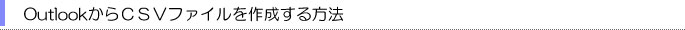 |
※ＯＳやソフトウェアのバージョンにより若干方法が異なる場合があります。
１、「ファイル」の「インポートとエクスポート」を選びます。

２、「ファイルへエクスポート」を選び、「次へ」を押します。
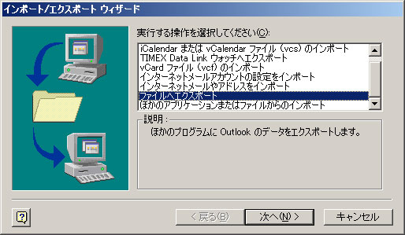
３、「テキストファイル（Windows、カンマ区切り）」を選びます。
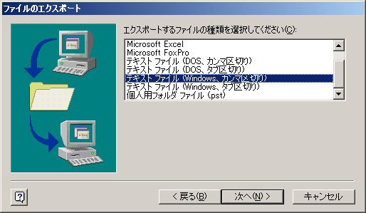
４、「連絡先」を選びます。
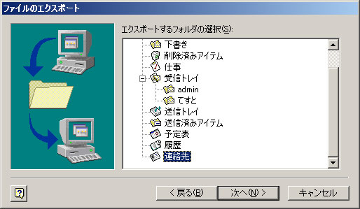
５、「参照」を選び、保存先を指定します。
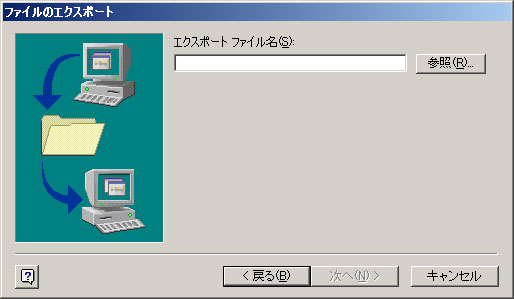
６、保存先を選択したら「次へ」を押します。
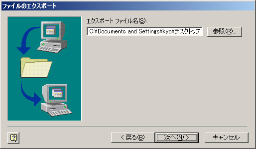
７、「フィールドの一致」を選択します。
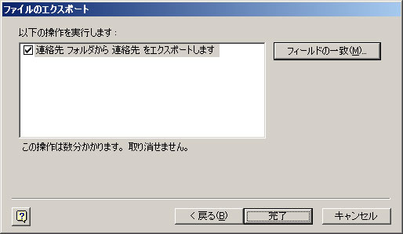
８、ここからが若干面倒です。
まず最初に「すべてクリア」を押して、右のフィールドの選択を全て消します。
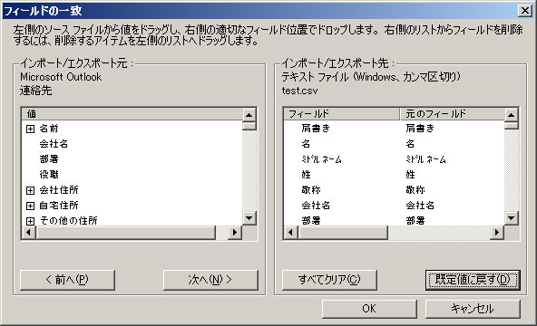
※画面をクリックすると大きくなります。
次に左のフィールドから「電子メール」の頭についている「＋」のマークをクリックすると
以下のように「電子メールアドレス」と「電子メール表示名」という項目が現れますので、
「電子メール表示名」「電子メールアドレス」という順番で右のフィールドにドラッグし
ＯＫを押します。
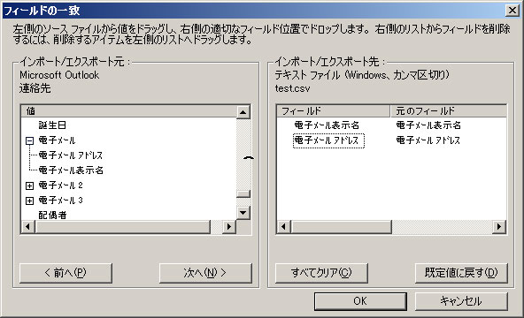
※画面をクリックすると大きくなります。
９、先ほどの画面に戻りますので、「完了」を押します。
１０ 、 保存した場所に以下のようなアイコンのＣＳＶが出来上がりますので、そのファイルを開きます。
１１、一行目に「電子メール表示名」「電子メールアドレス」と入ったセルがありますので、一行目を消します。
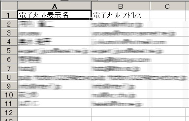
消し方は左の１の行を右クリックし「削除」を選びます
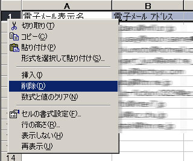
１２、無事消えたら「ファイル」の「上書き保存」を選んで上書きをしたら終了です。
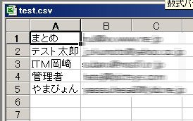
「OutlookExpressからＣＳＶファイルを作る方法」はこちらから！
|
|
|
|
|